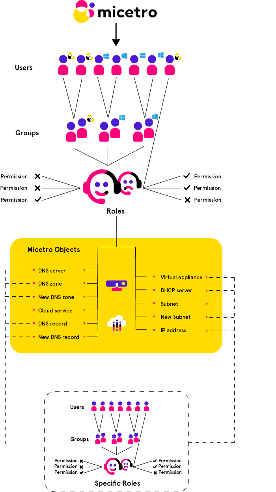

Access control
Important
Micetro 10.1 (released in September 2021) brought changes to the access management in order to make it more streamlined and easier to use, while keeping the flexibility. This page describes the new access control. If you’re using an older version, or would like information on the legacy access control model, see Access control (Legacy, pre-10.1).
Overview
Access control in Micetro is role-based.
Objects (servers, zones, scopes, IP addresses, etc.) in Micetro are accessed through Roles configured with Permissions. Users and Groups do not have direct access to objects, only if they’re assigned to roles. Administrators can control a user or group’s access by assigning or removing them from roles.
{kind=link}
A set of Built-in roles are available that should cover most use cases. These are General roles, applied to all objects (present and future) in Micetro. Specific roles exist for use cases where per-object permissions are required.
Groups, users, and roles
The relationship between Groups, Users, and Roles is as follows:
Users and groups can be assigned to roles.
Groups can contain users.
Groups cannot contain groups.
Users from externally managed groups, such as Active Directory, cannot be added to local groups.
Users and groups can be assigned to any number of roles.
The administrator user
The built-in, local administrator user exists outside of regular access controls. All permissions are enabled for this user (even if not attached to any role) and its permissions cannot be edited or overriden (see Block permission) by any role.
The password for the administrator user is configured during the first-run-wizard.
The administrator user cannot be removed from Micetro, and is always local (cannot be authenticated by SSO).
New objects
When a user imports or creates a new object (such as DNS zone, record, DHCP scope, IPAM range, etc.) in Micetro, the object is configured for a certain default access based on the permissions for the object type. General roles configured with permissions for the object type will have automatic access to the object.
Access control management
Because Micetro’s access controls are role-based, permissions are configured on the role, and propagated to any user or group attached to the role.
To grant restricted access on a per-object basis, see Specific roles.
To check access to a specific object and troubleshoot access control issues, see Effective access.